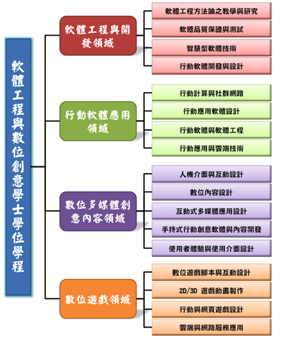

學程宗旨與特色
學程發展方向與重點:
為配合國家整體建設、發展方向及社會需要，依據輔仁大學中長程校務發展計畫重點及特色，考量現有輔仁大學理工學院與藝術學院之基礎及規模，學校整體資源之合理分配及使用效益，結合本校理工學院之資訊工程學系、電機工程學系、數學系、藝術學院之應用美術系以及大眾傳播學院之影像傳播學系的教學與研究之圖書、儀器、設備及空間，符合文化創意之數位內容領域之發展趨勢及科技整合之需要，以及針對社會變遷及人力需求、學術發展需要等目標，結合產官學研，協助台灣軟體工程與數位創意產業升級，提供相關人才進修管道。輔仁大學理工學院為培養國內高素質之軟體與數位創意應用專業所需之人才，經教育部核准設立『軟體工程與數位創意學士學位學程』。
學程將朝向以下幾個重點方向進行規劃：

資料來源:
軟創官方系網
軟體工程與數位創意學士學位學程